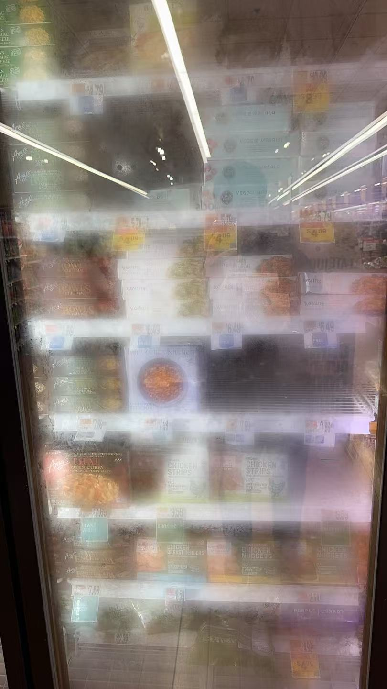
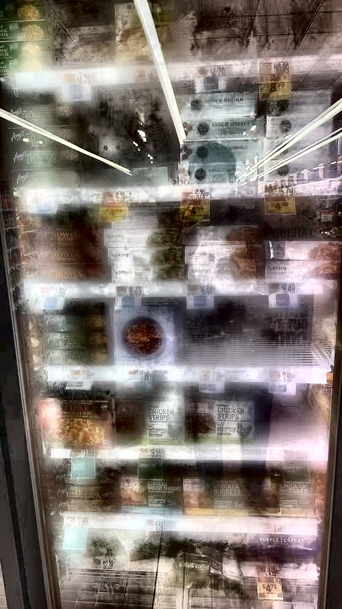

UMD Agentic-AI Challenge · Finals · Spring 2026
Smart Shelf
Auditor
AI that thinks like your best store manager — for less than the price of a coffee.
Same shelf intelligence, no robot fleet. Runs on any associate's phone; no hardware to deploy, no shopper to dodge.
Thirty-one empty shelf spaces. None of them flagged by any system — not the planogram app, not the ERP, not the associate doing rounds three aisles over.
For an average US supermarket doing $37M in sales, empty shelves cost ~$1.48M per store per year. ($37M × 4% out-of-stock loss rate · Corsten & Gruen / FMI 2024)
$1.73T
Lost globally / yr to inventory mismatch
91%
of shoppers walk out rather than wait for a restock
9%
of shoppers never come back to that store — ever
1 IHL Group, Fixing Inventory Distortion 2025 — $1.157T OOS + $572B overstock.
·
2 NielsenIQ, Shopper Trends 2024 — 91% walk-away, 9% permanent switch.
·
3 FMI Food Industry Facts 2024 — $37M avg store revenue ($711,806/wk × 52).
Reliability →
Cost per store / year →
↑ The gap nobody filled
Manual audits
~$20K/yr labor · misses 30%
Simbe Tally
$24–48K/store/yr
Pensa
Custom CV, enterprise pricing
★ Us
$200/mo · runs on a phone
What the incumbents all share
- Six-figure enterprise contracts — priced for Coca-Cola HQ, not a 50-store regional chain
- Dedicated hardware — cameras to install, robots to dock, humans to avoid
- Fixed pipelines — quietly fail on dark aisles, fogged freezers, or a pushed-back product
Our wedge: the tool that runs on equipment every store already owns, at a price even the smallest chain can swallow.
4 Simbe Tally RaaS pricing — Fortune, Oct 2024; The Spoon, Oct 2020.
·
5 Manual audit labor: 2 hr/day × 365 × $20/hr fully-loaded ≈ $14.6K, rounded to $20K incl. supervision.
·
6 30% miss rate: GMA / ECR Europe.
Walmart × Bossa Nova timeline
2015
Walmart begins testing Bossa Nova Robotics shelf-scanning robots in 50 stores.
2019
Expansion to 300 stores. Robots touted as "3× faster than humans" at inventory.
JAN 2020
Walmart commits to 1,000-store rollout by year-end.
NOV 2020
Walmart ends the contract. WSJ: humans got similar results with simpler solutions. Customer reaction to 6-ft robots was a concern.
2023
Bossa Nova, having raised $100M+, shuts down.
What Walmart told the market
- Cost didn't beat humans. Associates got "similar results" at lower incremental cost.
- Customer-experience regression. Shoppers actively disliked navigating around 6-foot autonomous robots.
- Hardware capex & service. Fleet depreciation, maintenance, battery swaps — an opex line every month.
- SKU ceiling. One unit per ~80,000 SKUs. A supercenter needs two.
Our read: the robot was the wrong form factor. The idea — automating shelf intelligence — is more right than ever. The form factor retail actually uses is the phone already in every associate's pocket.
7 Wall Street Journal & Retail Dive, Nov 2020.
·
8 CNBC, Nov 2, 2020 — "Walmart ends contract with robotics company Bossa Nova."
Fixed pipeline (everyone else)
Fails quietly when lights are dim, the freezer is fogged, or a product is just pushed back behind another.
Agentic loop (us)
1Check image quality→ if dark / foggy
2Auto-enhance the photo→ then
3Detect products + gaps→ if uncertain
4Ask vision AI by row→ if low confidence
5Verify via web search→ finalize
↑ loops back as needed
Adapts in real time. Skips what isn't needed. Asks for help when it doesn't know.
"The system makes a precise decision for every photo — no fixed rules, no fragile cascades."

[fog_before.jpg — foggy freezer, raw]
BEFORE
15 products

[fog_after.jpg — fog cleared, annotated]
AFTER (auto-cleared)
48 products
Dark aisle
Brightness 44 → 97. 60 products recovered that a fixed pipeline would miss entirely.
Normal shelf
97 products detected. 3 gaps. Identifies Bertolli pasta sauce by name.
🔗 try-it-live.shelfauditor.demo
drop any photo — no signup
Photos: real shelf captures from Mid-Atlantic grocery stores (Giant, Greenbelt MD). Enhancement: CLAHE for brightness · Dark Channel Prior (He et al. 2009) for fog. End-to-end scan time: 12–18 seconds.
$1/M
Cost of vision AI tokens today — 10× cheaper than 2023. A shelf scan now costs less than a penny.
12MP
In every associate's pocket. Better than the dedicated shelf cameras Trax was selling in 2018.
1.7M
US retail workers still unhired vs. Feb 2020. Managers are begging for automation.
The window opened. We walked through it.
9 Foundation-model vision-language API pricing — ~$1/M input, ~$5/M output tokens at today's leading providers.
·
10 iPhone 6s (2015) onward, Android equivalents from 2017.
·
11 US Chamber of Commerce, Understanding America's Labor Shortage, 2025.
Tiered inference ladder
Tier 1
CV primitives — detect_products · rows · gaps · occupancy
~$0.001 / call
Tier 2
Spatial reasoning — zoom_in · depth verification · image enhancement
~$0.002 / call
Tier 3
Vision-language model — identify_gap_context · shelf_quality (foundation-model API)
~$0.01 / call
Tier 4
Web-grounded synthesis — only when VLM confidence is low & finding is material
~$0.05 / call
Bottom-up to $40/store/month
- ~$0.005 per scan average (Tier 1–2 heavy, Tier 3 only on gaps)
- × 7,500 scans / store / month (~250 scans/day × 30 days) = $37.50
- + $2.50 hosting and monitoring (amortized across ~100 stores)
- = $40/store/month marginal cost
Even if scan volume doubles to 500/day, we're still at ~$77/month. With prompt caching on, that drops to ~$17. Unit economics hold at every realistic throughput.
Token math: ~1,800 input + 200 output per vision-language call × leading VLM rates ($1/M in, $5/M out) = $0.0028/call. Gap-hit rate ~50% → $0.0015 avg → rounded to $0.005 for safety margin. Full derivation available on request.
$8
per store, per month — what it costs us
$148K
per store, per year — what the retailer recovers
Our cost / store / month
| Vision AI calls (~1,500/mo, batched) | $6 |
| Hosting + monitoring | $2 |
| Phone hardware (already in-store) | $0 |
| Total marginal cost | $8 |
Customer recovery / store / year
| Lost sales recovered (10% × $1.48M) | $148K |
| Audit labor saved (75% of $14.6K) | $15K |
| Total annual value | $163K |
Price: $200/mo per store · Gross margin: 96% · Customer payback: 6 days · ROI: 67× per store
We are not 30% cheaper than Trax. We are 30× cheaper.
Revenue anchor: $37M avg US supermarket (FMI 2024). OOS loss: 4% (Corsten & Gruen 2004, canonical). Recovery: 10% (industry CV studies show 20–40%; we model half the low end). Trax reference: ~$8K/store/mo enterprise contracts.
Months 1–3
Pilot
5 stores · 1 regional chain
Build
Planogram ingest v1, mobile capture app, real-time UI
Validate
Real-world precision, ops friction, associate UX
Months 4–6
Beta
50 stores · paid at $200/mo
Build
Manager dashboard, alert routing, planogram-aware gaps
Validate
Pricing elasticity, multi-store ops, churn drivers
Months 7–12
Scale
500 stores · 2 enterprise deals
Build
Multi-tenant infra, ERP write-back, SOC 2 compliance
Validate
Enterprise sales motion, integration patterns
Each phase ships working software and produces measurable learning — not just headcount growth. 96% gross margin from day one of paid beta.
Same architecture at fleet scale
At 4,605 Walmart US stores: ~$2.9B recovered revenue/yr against ~$11M platform cost at our $200/mo price. No rebuild — same agent, same phone-first architecture.
! False positives waste associate time
A naive system drowns a store manager in notifications and erodes trust — the exact failure mode that killed Bossa Nova's perceived value at Walmart.
Mitigation: every refill task requires a 1-tap human accept. The agent recommends, never commands. Alert fatigue guardrails: severity-tiered refill checklist + per-shift cap + revenue-weighted ranking baked into the report schema.
! Customer privacy — faces in shelf photos
Shelf captures occasionally include customers in the background. Policy and perception both matter.
Mitigation: faces blurred on-device before any image leaves the phone. Photos stored encrypted, deleted after audit. GDPR & CCPA compliant by default; union-ready deployment protocol on request.
! "It's going to take my job"
The obvious objection. Our answer isn't "it won't" — it's "here's what your job becomes."
Mitigation: associates redeploy from audit drudgery to customer-facing work — the exact activity-based shift McKinsey recommends. Pilot will validate associate preference directly.
! Graceful degradation when the LLM is down
Enterprise reliability can't depend on a third-party API's uptime. If the VLM is unreachable, the audit must still happen.
Mitigation: fallback_report() returns a full audit from deterministic CV alone. Dehaze + CLAHE for bad photos. Enterprise reliability is a first-class path, not an afterthought.
Upstream — what we ingest
↑Planogram
Blue Yonder · RELEX — tells us which size belongs in that shelf position, so we move from guessing brands to knowing exact SKUs.
↑POS / sales velocity
NCR · Toast — revenue-weight every gap so the refill checklist is ranked by dollars, not alphabetical order.
↑Warehouse inventory
SAP · Manhattan Associates — distinguish a shelf-replenishment problem from a stockroom-empty problem.
Downstream — what we feed
↓Associate task app
Zebra Reflexis · Theatro — every gap becomes a task in the app they already use. Structured JSON (bbox + quantity_needed + unit_price) mirrors what those systems accept.
↓Auto-reorder
SAP S/4HANA — chronic OOS auto-triggers replenishment in the ERP they already run.
↓Manager dashboard & LP
Power BI · Looker — aggregated OSA per store; loss-prevention analytics roll into existing tools.
Planogram is our output, not a prerequisite. Most stores don't maintain a clean one — we auto-derive a reference catalog from "good day" photos using the same VLM stack. Procurement loves us. IT doesn't fight us.
The vision & the ask
Today: shelves. Tomorrow: every aisle, autonomous.
4 UMD students. 12 grocery stores walked in 6 weeks. Every scan makes the next one smarter — by 1M scans, our data corpus cannot be replicated.
☯ Data flywheel
Every scan trains the next. Labeled shelves compound; no incumbent can backfill a year of ops data.
Price tag accuracy
Same camera, same agent — verify shelf prices match POS in real time.
Planogram compliance
Catch misplaced products and unauthorized resets without manual audits.
Predictive restocking
Cross temporal scan data with POS velocity to pre-empt OOS before it happens.
Multi-store network insights
Chain-wide patterns: which SKUs go OOS first, which stores struggle most.
Customer flow analytics
Re-use the same agentic perception layer for traffic and dwell-time insights.
The ask1 pilot partner — regional chain, 5–10 stores
Mentors in retail enterprise sales
Live demotry-it-live.shelfauditor.demo
→ drop any shelf photo
TeamKejia Zhang · Marvyn Bailly
Minghan Yu · Chugang Yi · UMD